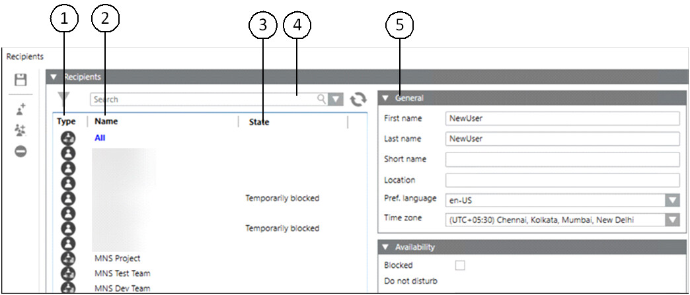
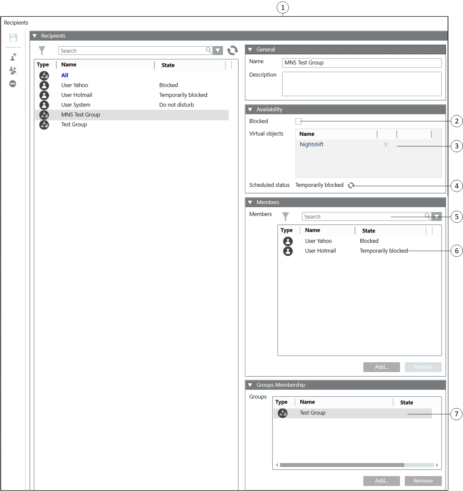
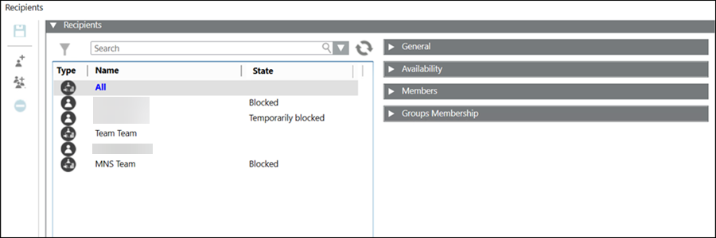
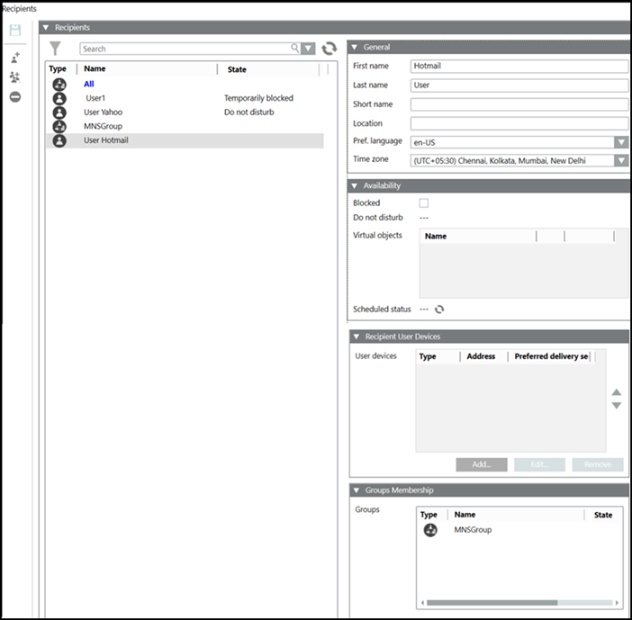

Recipients
The Recipients expander lists the configured recipients with details:

| Name | Description |
1 | Type | Displays the recipient user type. Following are the different recipient types |
2 | Name | Displays the recipient name. |
3 | State | Displays the recipient state. |
4 | Search | Filters the recipients based on the search string. |
5 | General | Displays the configuration details for the selected recipient. |
The General expander for the recipients depends on the type of the recipient selected.
Recipient Group Details
The recipient group details are displayed if a recipient group is selected from the recipients list:

| Name | Description |
1 | General | Displays the recipient group name and the description. |
2 | Blocked (Available only for Reno Plus license users) | Check this option to block the recipient if you do not want to send the message to the recipient user. |
3 | Virtual objects | Allows you to drag and drop virtual data points from the available list. The virtual data points are located under Applications > Logics > Virtual Objects. For more information on virtual objects, refer to the Virtual Objects topic. In addition, refer to the Management Station Schedules topic. |
4 | Scheduled status | Displays the status of the schedule. |
5 | Search | Enter a search string. recipients containing a matching character string will be displayed. |
6 | Members | Displays the list of recipients belonging to the group with the user type, name, and the user status information. |
7 | Groups Membership | Displays the list of groups that the selected recipient group is a part of. |
All Group
All group is a special (default) group that consists of all the recipients present in the system. All group is used to send the notifications to all the recipients. All group is non-editable. It cannot be modified or deleted.
Send a notification to all recipients: To send the notification to all recipients, add the ‘All’ group as a recipient to the notification.

Recipient User Details
The recipient user details are displayed if a recipient user is selected from the recipients list.

| Name | Description |
1 | First name | Displays the first name of the recipient user. |
2 | Last name | Displays the last name of the recipient user. |
3 | Short name | Displays the short name of the recipient user and it is not a mandatory field. Its value can be null. |
4 | Pref. language | Displays the selected preferred language for delivery of notifications for the recipient user. |
5 | Time zone (Available only for Reno Plus license users) | Time zone is local time of a region or a country of a recipient user. Date and time format would be as per the preferred language selected. |
6 | Blocked (Available only for Reno Plus license users) | Check this option to block the recipient if you do not want to send the message to the recipient user. |
7 | Do not disturb | Displays if the recipient is in Do not disturb mode. |
8 | Virtual objects | Allows you to drag and drop virtual data points from the available list. The virtual data points are located under Applications > Logics > Virtual Objects. For more information on virtual objects, refer to the Virtual Objects topic. In addition, refer to the Management Station Schedules topic. |
9 | Scheduled status | Displays the status of the schedule. |
10 | Recipient user devices | Displays the list of user devices for the selected recipient user. Each user device configuration consists of device type, address, and the preferred delivery method. |
11 | Add | Adds new recipient user device for selected recipient user. |
12 | Edit | Edits the user device details for the selected recipient user. |
13 | Remove | Removes a user device for the selected recipient user. |
14 | Groups | Displays the list of groups that the selected recipient user is in. |
15 | Add | Adds the recipient user as a part of a group. |